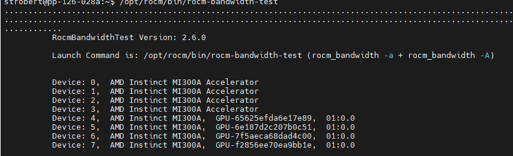
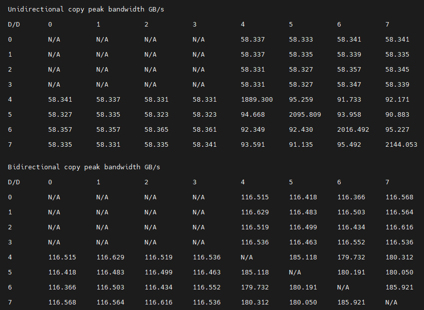

AMD Instinct MI300A system optimization#
2024-09-03
16 min read time
This topic discusses the operating system settings and system management commands for the AMD Instinct MI300A accelerator. This topic can help you optimize performance.
System settings#
This section reviews the system settings required to configure a MI300A SOC system and optimize its performance.
The MI300A system-on-a-chip (SOC) design requires you to review and potentially adjust your OS configuration as explained in the Operating system settings section. These settings are critical for performance because the OS on an accelerated processing unit (APU) is responsible for memory management across the CPU and GPU accelerators. In the APU memory model, system settings are available to limit GPU memory allocation. This limit is important because legacy software often determines the amount of allowable memory at start-up time by probing discrete memory until it is exhausted. If left unchecked, this practice can starve the OS of resources.
System BIOS settings#
System BIOS settings are preconfigured for optimal performance from the platform vendor. This means that you do not need to adjust these settings when using MI300A. If you have any questions regarding these settings, contact your MI300A platform vendor.
GRUB settings#
The /etc/default/grub file is used to configure the GRUB bootloader on modern Linux distributions.
Linux uses the string assigned to GRUB_CMDLINE_LINUX in this file as
its command line parameters during boot.
Appending strings using the Linux command line#
It is recommended that you append the following string to GRUB_CMDLINE_LINUX.
pci=realloc=offThis setting disables the automatic reallocation of PCI resources, so Linux is able to unambiguously detect all GPUs on the MI300A-based system. It’s used when Single Root I/O Virtualization (SR-IOV) Base Address Registers (BARs) have not been allocated by the BIOS. This can help avoid potential issues with certain hardware configurations.
Validating the IOMMU setting#
IOMMU is a system-specific IO mapping mechanism for DMA mapping and isolation. IOMMU is turned off by default in the operating system settings for optimal performance.
To verify IOMMU is turned off, first install the acpica-tools package using your
package manager.
sudo apt install acpica-tools
Then confirm that the following commands do not return any results.
sudo acpidump | grep IVRS
sudo acpidump | grep DMAR
Update GRUB#
Use this command to update GRUB to use the modified configuration:
sudo grub2-mkconfig -o /boot/grub2/grub.cfg
On some Red Hat-based systems, the grub2-mkconfig command might not be available. In this case,
use grub-mkconfig instead. Verify that you have the
correct version by using the following command:
grub-mkconfig -version
Operating system settings#
The operating system provides several options to customize and tune performance. For more information about supported operating systems, see the Compatibility matrix.
If you are using a distribution other than RHEL or SLES, the latest Linux kernel is recommended. Performance considerations for the Zen4, which is the core architecture in the MI300A, require a Linux kernel running version 5.18 or higher.
This section describes performance-based settings.
Enable transparent huge pages
To enable transparent huge pages, use one of the following methods:
From the command line, run the following command:
echo always > /sys/kernel/mm/transparent_hugepage/enabled
Set the Linux kernel parameter
transparent_hugepageas follows in the relevant.cfgfile for your system.transparent_hugepage=always
Increase the amount of allocatable memory
By default, when using a device allocator via HIP, it is only possible to allocate 96 GiB out of a possible 128 GiB of memory on the MI300A. This limitation does not affect host allocations. To increase the available system memory, load the
amdttmmodule with new values forpages_limitandpage_pool_size. These numbers correspond to the number of 4 KiB pages of memory. To make 128 GiB of memory available across all four devices, for a total amount of 512 GiB, setpages_limitandpage_pool_sizeto134217728. For a two-socket system, divide these values by two. After setting these values, reload the AMDGPU driver.First, review the current settings using this shell command:
cat /sys/module/amdttm/parameters/pages_limitTo set the amount of allocatable memory to all available memory on all four APU devices, run these commands:
sudo modprobe amdttm pages_limit=134217728 page_pool_size=134217728 sudo modprobe amdgpu
These settings can also be hardcoded in the
/etc/modprobe.d/amdttm.conffile or specified as boot parameters.To use the hardcoded method, the filesystem must already be set up when the kernel driver is loaded. To hardcode the settings, add the following lines to
/etc/modprobe.d/amdttm.conf:options amdttm pages_limit=134217728 options amdttm page_pool_size=134217728
If the filesystem is not already set up when the kernel driver is loaded, then the options must be specified as boot parameters. To specify the settings as boot parameters when loading the kernel, use this example as a guideline:
vmlinux-[...] amdttm.pages_limit=134217728 amdttm.page_pool_size=134217728 [...]
To verify the new settings and confirm the change, use this command:
cat /sys/module/amdttm/parameters/pages_limitNote
The system settings for
pages_limitandpage_pool_sizeare calculated by multiplying the per-APU limit of 4 KiB pages, which is33554432, by the number of APUs on the node. The limit for a system with two APUs33554432 x 2or67108864. This means themodprobecommand for two APUs issudo modprobe amdttm pages_limit=67108864 page_pool_size=67108864.Limit the maximum and single memory allocations on the GPU
Many AI-related applications were originally developed on discrete GPUs. Some of these applications have fixed problem sizes associated with the targeted GPU size, and some attempt to determine the system memory limits by allocating chunks until failure. These techniques can cause issues in an APU with a shared space.
To allow these applications to run on the APU without further changes, ROCm supports a default memory policy that restricts the percentage of the GPU that can be allocated. The following environment variables control this feature:
GPU_MAX_ALLOC_PERCENTGPU_SINGLE_ALLOC_PERCENT
These settings can be added to the default shell environment or the user environment. The effect of the memory allocation settings varies depending on the system, configuration, and task. They might require adjustment, especially when performing GPU benchmarks. Setting these values to
100lets the GPU allocate any amount of free memory. However, the risk of encountering an operating system out-of-memory (OMM) condition increases when almost all the available memory is used.Before setting either of these items to 100 percent, carefully consider the expected CPU workload allocation and the anticipated OS usage. For instance, if the OS requires 8GB on a 128GB system, setting these variables to
100authorizes a single workload to allocate up to 120GB of memory. Unless the system has swap space configured any over-allocation attempts will be handled by the OMM policies.Disable NUMA (Non-uniform memory access) balancing
ROCm uses information from the compiled application to ensure an affinity exists between the GPU agent processes and their CPU hosts or co-processing agents. Because the APU has OS threads, including threads with memory management, the default kernel NUMA policies can adversely impact workload performance without additional tuning.
Note
At the kernel level,
pci_relloccan also be set tooffas an additional tuning measure.To disable NUMA balancing, use one of the following methods:
From the command line, run the following command:
echo 0 > /proc/sys/kernel/numa_balancing
Set the following Linux kernel parameters in the relevant
.cfgfile for your system.pci=realloc=off numa_balancing=disable
Enable compaction
Compaction is necessary for proper MI300A operation because the APU dynamically shares memory between the CPU and GPU. Compaction can be done proactively, which reduces allocation costs, or performed during allocation, in which case it is part of the background activities. Without compaction, the MI300A application performance eventually degrades as fragmentation increases. In RHEL distributions, compaction is disabled by default. In Ubuntu, it’s enabled by default.
To enable compaction, enter the following commands using the command line:
echo 20 > /proc/sys/vm/compaction_proactiveness echo 1 > /proc/sys/vm/compact_unevictable_allowed
Change affinity of ROCm helper threads
Changing the affinity prevents internal ROCm threads from having their CPU core affinity mask set to all CPU cores available. With this setting, the threads inherit their parent’s CPU core affinity mask. Before adjusting this setting, ensure you thoroughly understand your system topology and how the application, runtime environment, and batch system set the thread-to-core affinity. If you have any questions regarding this setting, contact your MI300A platform vendor or the AMD support team. To enable this setting, enter the following command:
export HSA_OVERRIDE_CPU_AFFINITY_DEBUG=0
CPU core states and C-states
The system BIOS handles these settings for the MI300A. They don’t need to be configured on the operating system.
System management#
For a complete guide on installing, managing, and uninstalling ROCm on Linux, see Quick-start (Linux). To verify that the installation was successful, see the Post-installation instructions and ROCm tools guides. If verification fails, consult the System debugging guide.
Hardware verification with ROCm#
ROCm includes tools to query the system structure. To query
the GPU hardware, use the rocm-smi command.
rocm-smi reports statistics per socket, so the power results combine CPU and GPU utilization.
In an idle state on a multi-socket system, some power imbalances are expected because
the distribution of OS threads can keep some APU devices at higher power states.
Note
The MI300A VRAM settings show as N/A.
The rocm-smi --showhw command shows the available system
GPUs and their device ID and firmware details.
In the MI300A hardware settings, the system BIOS handles the UMC RAS. The
ROCm-supplied GPU driver does not manage this setting.
This results in a value of DISABLED for the UMC RAS setting.
To see the system structure, the localization of the GPUs in the system, and the
fabric connections between the system components, use the rocm-smi --showtopo command.
The first block of the output shows the distance between the GPUs. The weight is a qualitative measure of the “distance” data must travel to reach one GPU from another. While the values do not have a precise physical meaning, the higher the value the more hops are required to reach the destination from the source GPU.
The second block contains a matrix named “Hops between two GPUs”, where
1means the two GPUs are directly connected with XGMI,2means both GPUs are linked to the same CPU socket and GPU communications go through the CPU, and3means both GPUs are linked to different CPU sockets so communications go through both CPU sockets.The third block indicates the link types between the GPUs. This can either be
XGMIfor AMD Infinity Fabric links orPCIEfor PCIe Gen4 links.The fourth block reveals the localization of a GPU with respect to the NUMA organization of the shared memory of the AMD EPYC processors.
Testing inter-device bandwidth#
The rocm-smi --showtopo command from the Hardware verification with ROCm section
displays the system structure and shows how the GPUs are located and connected within this
structure. For more information, use the ROCm Bandwidth Test, which can run benchmarks to
show the effective link bandwidth between the system components.
For information on how to install the ROCm Bandwidth Test, see Building the environment.
The output lists the available compute devices (CPUs and GPUs), including their device ID and PCIe ID:
It also displays the measured bandwidth for unidirectional and bidirectional transfers between the devices on the CPU and GPU:
Abbreviations#
- APBDIS
Algorithmic Performance Boost Disable
- APU
Accelerated processing unit
- BAR
Base Address Register
- BIOS
Basic Input/Output System
- CBS
Common BIOS Settings
- CCD
Compute Core Die
- CDNA
Compute DNA
- CLI
Command Line Interface
- CPU
Central Processing Unit
- cTDP
Configurable Thermal Design Power
- DF
Data Fabric
- DMA
Direct Memory Access
- GPU
Graphics Processing Unit
- GRUB
Grand Unified Bootloader
- HBM
High Bandwidth Memory
- HPC
High Performance Computing
- IOMMU
Input-Output Memory Management Unit
- ISA
Instruction Set Architecture
- NBIO
North Bridge Input/Output
- NUMA
Non-Uniform Memory Access
- OMM
Out of Memory
- PCI
Peripheral Component Interconnect
- PCIe
PCI Express
- POR
Power-On Reset
- RAS
Reliability, availability and serviceability
- SMI
System Management Interface
- SMT
Simultaneous Multi-threading
- SOC
System On Chip
- SR-IOV
Single Root I/O Virtualization
- TSME
Transparent Secure Memory Encryption
- UMC
Unified Memory Controller
- VRAM
Video RAM
- xGMI
Inter-chip Global Memory Interconnect